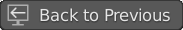
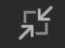

1.1.2.2. ズーム¶
動画編集プロジェクトでは、作業中のセクションを拡大できることが重要です。一方で、タイムラインの概要を把握することも重要です。したがって、ズームインとズームアウトは頻繁に行われるアクションです。
図1: すべてのズーム コマンドを使用した注釈付きビデオ注釈
Blender のすべてのコマンドと同様に、その解釈はマウス カーソルの位置によって異なります。マウス カーソルが Preview ウィンドウ上にあるときに Home を押すと、Preview ウィンドウのみがズームされます。Sequencer をズームインまたはズームアウトするには、マウス カーソルがその領域上にある必要があります。
図2: View メニュー¶
- Ctrl-Spacebar
Ctrl-Spacebar キーを押すと、マウス カーソルの下にあるウィンドウがセミフルビューに切り替わります。ヘッダーとメニューは引き続き表示されます。図 1 のビデオはこのビューで作成されています。 一番上に [Back to Previous] ボタン  があるのでわかります。この全画面表示は概要を把握するのに役立ちます。特に垂直方向の次元（チャネル）において。もう一度 Ctrl-Spacebar 押すか、[Back to Previous] ボタンを押すと、ウィンドウが復元されます。このコマンドはメニューから呼び出すことができます: [View] > [Area] > [Toggle Maximize Area]
- Alt-Ctrl-Spacebar
Alt-Ctrl-Spacebar キーを押すと、マウスカーソルの下にあるウィンドウが全体表示に切り替わります。利用可能な画面スペースはすべてタイムライン用に予約されています。ウィンドウを元に戻すには、もう一度 Alt-Ctrl-Spacebar 押す必要があります。 他のキーは役に立ちません 。または、復元ボタン  が表示されるまで、ウィンドウの右上隅にマウスを置きます。とても見逃しやすいです！ このコマンドはメニューから呼び出すことができます: [View] > [Area] > [Toggle FullScreen Area]
- Home
Home キーを押すと、プロジェクト全体が拡大表示されます。開始から終了まで、およびチャンネル 1 からチャンネル 7 まで。一部のストリップがこれらの境界を越えている場合、範囲はこれらのストリップをカバーするように拡張されます (Moving the Timeline window セクションを参照してください)。タイムラインで迷った場合は、 Home キーを押して、全体像に戻ります。多くのズーム コマンドはメニューから実行することもできます (図 2)。Home と同等のメニューは [View] > [Frame All] です。
- NumpadPeriod
NumpadPeriod キーを押すと、選択したストリップのみに合わせて表示範囲がズームされます。このキーはテンキーのピリオド キーであり、英数字キーパッドのピリオド キーではないことに注意してください。同等のメニューは、[View] > [Frame Selected] です (図2)。
警告
テンキーをお持ちでない場合、ユーザー設定の Emulate Numpad オプションは役に立ちません。英数字キーパッドから通常のピリオド キーを使用することはできません。
ただし、これらのショートカットを変更したり、独自のショートカットを作成したりできます。Blender Frenzy には、これらの Custom Keymaps に関する素晴らしいビデオがあります。
- Numpad +/-
Numpad + または Numpad - キーを押すと、現在の表示範囲から開始して、小さな増分ステップ (+/- 5 フレーム、+/- 10 フレーム、+/- 15 フレーム、…) でズームインまたはズームアウトします。希望のズーム レベルに達するまでキーを押し続けることができます。
- Shift-B
Shift-B キーを押すと、十字カーソルが表示され、クリックしてドラッグしてSequencerウィンドウに矩形で範囲選択できます。マウスボタンを放すと、表示範囲がこの矩形にズームされます。 Shift-B を押すのと同等のメニューは、[View] > [Zoom] です (図2)。
- MMB + Wheel Roll
マウスの中ホイールをスクロールすると、Playheadの周囲を水平方向にズームインします。自分の方にスクロールするとズームアウトします。画面に向かってスクロールするとズームインします。
Ctrl または Shift と組み合わせて MMB ホイール ロールを使用すると、動作がズームから移動に変わります(:doc:`Moving the Timeline window <move>`を参照)。
- Ctrl-MMB + drag
最初に:kbd:Ctrl-MMB を押してからドラッグすることが重要です。
- Scrollbar circles
Sequencer領域の最下部と右端には、スクロールバーがあります。スクロールバーの長さまたは高さは、Strip Range のどのくらいの割合が表示されているかを示します。例えば Home キーを押すと、表示範囲が Strip Range と等しくなるため、スクロールバーが最大の長さと高さになります。
各スクロールバーの最初と最後には円があります (図3)。これらの円をドラッグすると、スクロールバーの長さまたは高さが縮小または拡大され、これに従い 表示範囲も縮小または拡大されます。たとえば、図3 では、左側のズームサークルを左にドラッグすると、表示範囲がフレーム 200 からフレーム 1 (プロジェクトの開始点) まで拡大されます。右のズームサークルをフレーム 1000 (プロジェクトの終わり) にドラッグできます。この時点で、スクロールバーは全長になります (完全なプロジェクトの範囲が表示されます)。表示範囲はStrip Rangeより大きく、最終的には Blender で可能な最大の表示範囲 (-500,000 ～ + 500,000 フレーム) が表示できます。
{kind=link}
{kind=link}
図3: ズームサークルと垂直・水平スクロールバー¶
上記のほとんどのコマンドは、両方の次元を同時に拡大または縮小します。たとえば、Home は水平方向と垂直方向の両方ですべてのストリップが表示されるまでズームします。スクロールバーの円を使用すると、1 次元でのみズームインまたはズームアウトし、ズームする方向を選択できます。